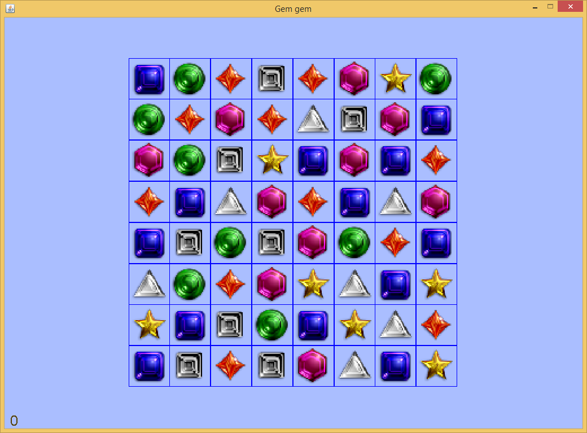
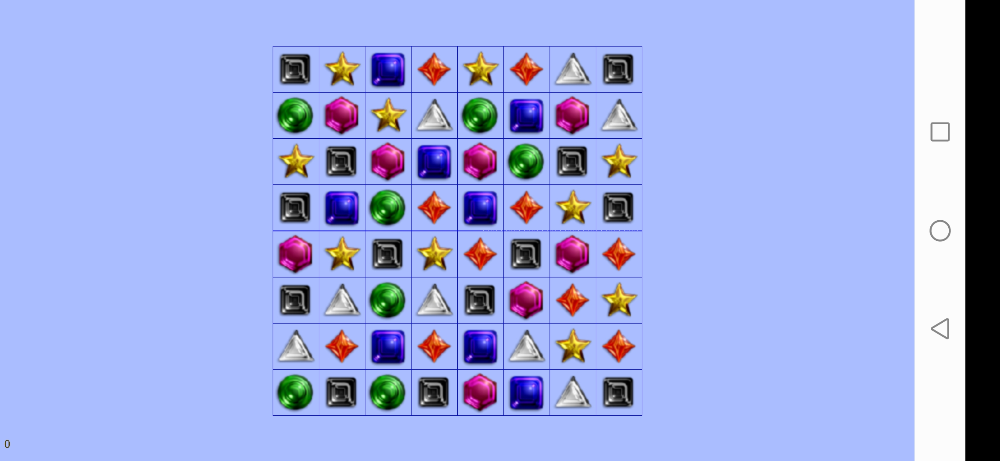

Gem crush game is popular all over the world. It is simple to play but tricky to implement. The difficulty is how to show the animation of the gem swapping and crushing. Note that the gem crush game includes 64 gems on the board. Redrawing all the gems on the display is a computationally expensive task. The bottom line is minimizing the number of painting activities on the display. All static elements should be drawn in a buffered image and then the buffered image is posted to the screen in the screen update event.
In the code, a function called init_Board_And_Animate generates this buffered image. This function calls function open_image_display to generate a image display handle. Similar to function open_screen_display , the returned image display handle can be used to set and return size of the image by calling functions set_display_size and get_display_size, can be used to calculate position of text by calling calculate_text_origin and can accept painting events triggered by painting functions, e.g. draw_text and draw_oval. Developer is able to take a snapshot of the image display handle by simply calling function get_display_snapshot. The returned image is then posted to the screen by calling function draw_image. The code snippet is shown below.
// initialize the game board and animate all the gems dropping down
// 初始化游戏面板，并且模拟所有的宝石落下的过程
function init_Board_And_Animate(DISPLAYSURF, GEMIMAGES, BOARDRECTS, board, windowWidth, windowHeight, mvRate)
variable gemsImageDisplay = open_image_display(null)
set_display_size(gemsImageDisplay, windowWidth, windowHeight)
... ... // call painting functions to draw image display handle here, e.g. draw_image, draw_text and draw_point here. //在此处调用绘图函数在图像上绘制各种宝石
update_display(gemsImageDisplay)
variable gemsImage = get_display_snapshot(gemsImageDisplay, false, shrinkingRatio, shrinkingRatio)
... ...
draw_image("gemgem", DISPLAYSURF, gemsImage, 0, (windowHeight - progress)*shrinkingRatio, windowWidth*shrinkingRatio, windowHeight*shrinkingRatio, 0, 0, , windowWidth, progress)
MFP also provides a function called set_display_snapshot_as_bgrnd. This function takes snapshot of an image display handle or screen display handle and use the snapshot as background image of the display. The benefit is, calling this function once, the snapshot of the display will be automatically converted to its background. This approach is faster than calling draw_image function and the background image is not affected by function drop_old_painting_requests.
When player moves gems, the background image needs to erase the grid cells where gems are moved or crushed. To this end, function clear_rect is called on the buffered image handle. Because only a small part of gems are moving, they are drawn directly on the screen on top of the background image. After they are settled down in the their new cells, draw the moved gems back on the buffered image handle, call function get_display_snapshot to get the updated snapshot of the buffered image handle and then call function set_display_snapshot_as_bgrnd to set the updated snapshot as the background image of buffered image handle.
// first clear the two gems which will be swapped back from the background image of game's screen display
// 首先，把这两个要交换回来的宝石从游戏显示窗口的背景图案中抹掉
clear_rect("gemgem", gemsImageDisplay, [theX1, theY1], gemImgSize, gemImgSize)
clear_rect("gemgem", gemsImageDisplay, [theX2, theY2], gemImgSize, gemImgSize)
// update gemsImageDisplay and then take snapshot of this image display
// 更新图像“显示窗口”gemsImageDisplay，然后截取它的视图
update_display(gemsImageDisplay)
gemsImage = get_display_snapshot(gemsImageDisplay, false, shrinkingRatio, shrinkingRatio) //this is static gems image.
firstSwappingGem[infoNum] = gameBoard[x1][y1]
secondSwappingGem[infoNum] = gameBoard[x2][y2]
// animate the gem swapping.
// 模拟宝石换位的动画过程。
animate_Swapping_Gems(DISPLAYSURF, GEMIMAGES, BOARDRECTS, boardCopy, gemsImage, [firstSwappingGem, secondSwappingGem], [], score, _
gemImgSize, xMargin, yMargin, mvRate, up, down, left, right, rowAboveBoard)
// Swap the logic gems in the board data structure.
// 交换宝石在游戏面板数据结构中的逻辑位置
gameBoard[x1][y1] = secondSwappingGem[infoNum]
gameBoard[x2][y2] = firstSwappingGem[infoNum]
// send draw request for the swapped gems
// 为这两个交换位置的宝石发送绘制请求
draw_image("gemgem", gemsImageDisplay, GEMIMAGES[gameBoard[x1][y1]], theX1, theY1, scaledRatio, scaledRatio)
draw_image("gemgem", gemsImageDisplay, GEMIMAGES[gameBoard[x2][y2]], theX2, theY2, scaledRatio, scaledRatio)
// update gemsImageDisplay
// 更新图像“显示窗口”gemsImageDisplay
update_display(gemsImageDisplay)
... ...
set_display_snapshot_as_bgrnd(gemsImageDisplay, true, true)
The sample code and its auxiliary files have been zipped in package. Click here to download zipped package of game examples. Unzip it and copy the game_examples folder into the scripts folder next to the JMFPLang.jar file, as shown in the following chart.

The source script, i.e. gemgem.mfps is in gemgem subfolder of game_examples folder. Its auxiliary files, i.e. gem*.png, match*.wav and badstart.wav are also located in the same folder. To launch the example, simply start JMFPLang.jar file and in the command line run gdi_test::game_test::gemgem::start_gemgem(). Player can also navigate to the folder where JMFPLang.jar is located and then run the script in Windows Command/Powershell or Linux bash by typing java -jar JMFPLang.jar -f scripts\game_examples\gemgem\gemgem.mfps.
Thanks to MFP's support to both JVM and Android, the gem crush game can run not only in PC with Java installed, but also in Android as an app or a script. The following charts snapshot the game on the two platforms. The top one is the game running in Windows + JVM and the second one is running in Android as an app.

